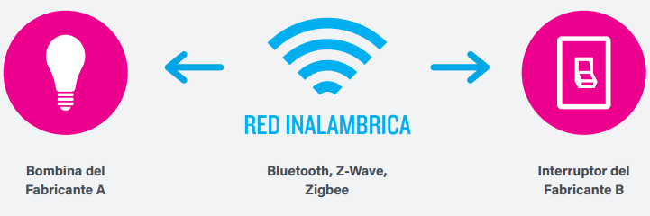
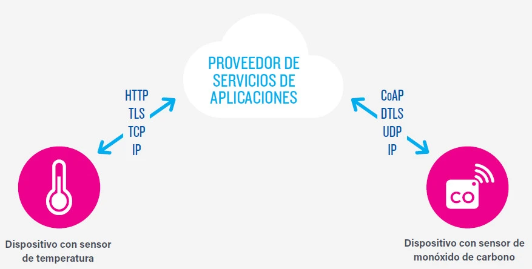
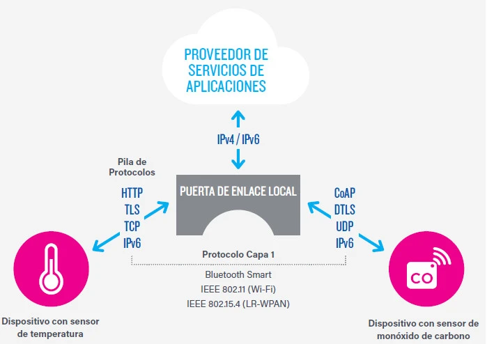
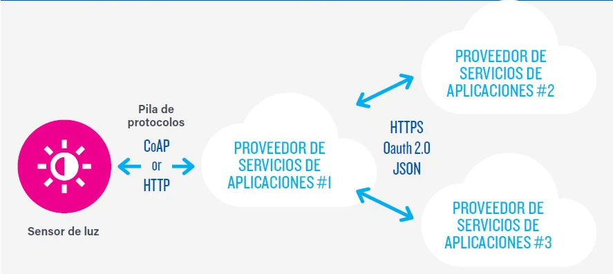

Internet de las cosas
Modelos de comunicación del Internet de las cosas
En marzo de 2015, el Comité de Arquitectura de Internet (IAB) dio a conocer un documento para guiar la creación de redes de objetos inteligentes (RFC 7452) que describe un marco de cuatro modelos de comunicación comunes que utilizan los dispositivos de la IoT, los cuales se presentarán a continuación:
Comunicaciones 'dispositivo a dispositivo'
El modelo de comunicación dispositivo a dispositivo representa dos o más dispositivos que se conectan y se comunican directamente entre sí y no a través de un servidor de aplicaciones intermediario. Estos dispositivos se comunican sobre muchos tipos de redes, entre ellas las redes IP o la Internet, aunque la mayoría de las veces utilizan protocolos como Bluetooth, Z-Wave y ZigBee.
Estas redes dispositivo a dispositivo permiten que los dispositivos que, para comunicarse e intercambiar mensajes, se adhieren a un determinado protocolo de comunicación logren su función. Por lo general, este modelo de comunicación se utiliza en aplicaciones como sistemas de automatización del hogar para transferir pequeñas cantidades de información para la comunicación entre dispositivos con requisitos relativamente bajos en términos de la tasa de transmisión. Estos podrían ser focos, termostatos y cerraduras de puertas que se envían pequeñas cantidades de información entre sí.
Comunicaciones 'dispositivo a la nube'
En este segundo modelo, el dispositivo de IoT se conecta directamente a un servicio en la nube, como un proveedor de servicios de aplicaciones para intercambiar datos y controlar el tráfico de mensajes, usando conexiones Wi-Fi o red ethernet (los mecanismos de comunicación de que se disponga) para conectarse a la red IP, y establecer una conexión con el servicio de la nube.
Este modelo, aporta más valor al usuario, ya que amplía las capacidades del dispositivo más allá de sus características nativas como permitir acceso remoto a un dispositivo, además de ser potencialmente compatible con impulsar actualizaciones de software para el dispositivo.
Modelo 'dispositivo a puerta de enlace'
En este tercer modelo de comunicación, el dispositivo de la IoT se conecta a través de otro dispositivo que hace de puerta de enlace o intermediario como una forma de llegar a un servicio en la nube. Esto implica que hay un software de aplicación corriendo en un dispositivo de puerta de enlace local, que actúa como intermediario entre el dispositivo y el servicio en la nube y provee seguridad y otras funcionalidades tales como traducción de protocolos o datos. Si la puerta de enlace es un teléfono inteligente, este software podría adoptar la forma de una aplicación que se empareja con el dispositivo de IoT y se comunica con un servicio en la nube.
Un ejemplo de dispositivos que utilizan este modo de conexión son los dispositivos vestibles (o wearables) que se utilizan para hacer deporte, que al no tener capacidad nativa para conectarse a Internet, utilizan un teléfono inteligente como puerta de enlace local, con una aplicación que facilita la comunicación y transmisión de datos entre el dispositivo y un servicio en la nube.
Modelo de intercambio de datos a través del back-end
El cuarto modelo extiende esencialmente el modelo 2 de dispositivo a la nube, con una arquitectura de comunicación que permite que los usuarios exporten y analicen datos de objetos inteligentes de un servicio en la nube en combinación con datos de otras fuentes, con el objetivo de permitir que terceros autorizados puedan acceder a los dispositivos y datos del sensor. Esta arquitectura permite agregar y analizar los datos producidos de los dispositivos desplegados en un edificio.
El modelo de intercambio de datos a través del back-end sugiere que, para lograr la interoperabilidad de los datos de dispositivos inteligentes alojados en la nube, se requiere un enfoque de servicios federados o interfaces de programación de aplicaciones (APIs) en la nube.